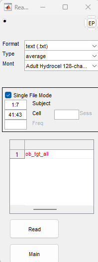

EEG and ERP Processing and Analysis
1 Extracting Behavioral
Data from E-Prime
- Run E-Merge
- Navigate to the folder with the task data
- Select
Merge - Select
Recursive Merge - Only merge:
All specified files regardless of merge status - Save target file (
filename.emrg2) - Double click the newly saved file (
filename.emrg2) to open it in E-DataAid - Go to
File,Export - Make sure
SPSSis selected and that theUnicodeoption is unselected: https://mattkmiecik.com/posts/post-Stop-Using-Excel-to-Preprocess-E-Prime-Data/post-Stop-Using-Excel-to-Preprocess-E-Prime-Data.html (archived at https://perma.cc/N734-4W9X) - Save the file as:
filename.txt
2 ERP Processing Pipeline using HAPPE
- Download MATLAB: https://its.uiowa.edu/matlab
- Click
How to Install MatLaband follow the relevant instructions - Create a
MatLabfolder in your local directory. You will keep all of your MatLab related files in this folder.
- Click
- Install the HAPPE pipeline: https://github.com/PINE-Lab/HAPPE
- Clone the HAPPE repository to your
GitHubaccount - Open the
HAPPEfolder - Open the
HAPPE User Guidedocument - Read through the
HAPPE User Guide - Navigate to the
Setting up HAPPEsection in the user guide and follow the instructions for setting up the HAPPE pipeline, including installation of add-ons and eeglab
- Clone the HAPPE repository to your
- Install EP Toolkit: https://sourceforge.net/projects/erppcatoolkit/
- After downloading, copy the
EP_Toolkitfolder to yourMatlabfolder (in your local directory) - In the
EP_toolkitfolder:- Open
EP_Toolkit - Open
Documentation - Open
tutorial
- Open
- In the
tutorialdocument, navigate to theSet Upsection and follow the instructions for installing and setting up EP Toolkit and FieldTrip. Do NOT follow instructions for setting up EEGLAB. You have already set up your path to EEGLAB when you set up the HAPPE pipeline. - You should have the following subfolders in your
MatLabfolder:EP_ToolkitFieldtrip-[version number]
- After downloading, copy the
- Open the HAPPE pipeline V4 script in MATLAB
- Follow the User Guide instructions for the HAPPE-ER pipeline, using the user inputs described below.
2.1 Oddball Task
- User Inputs
- Enter the path to the folder containing the dataset. All ERP files
are stored on the lab drive
(
\\lc-rs-store24.hpc.uiowa.edu\lss_itpetersen\Lab\Studies\School Readiness Study\Data\LV2\ERP) - Select
raw - Load pre-existing set of input parameter:
Nif this is your first time running data through the pipeline.Yif you have decided on a set of parameters. Enter the path to the folder containing the input parameters.
- Low density data:
N - Data type:
task - Performing event-related potential (ERP) analysis:
Y - Enter the task onset tags
- Target:
tgt+ - Frequent:
frq+ done
- Target:
- Do multiple onset tags belong to a single condition?
N - File format:
5 - Acquisition layout type:
2 - Number of channels:
128 - Do you have additional type fields besides “code”?
N - Select channels of interest:
all - Frequency of electrical noise in Hz:
60 - Are there any additional frequencies, (e.g., harmonics) to reduce?
N - Line Noise reduction method:
notch- Low cutoff:
59 - high cutoff:
61
- Low cutoff:
- Resample:
N - Filter
- Low Pass Cutoff:
30 - High Pass Cutoff:
.1
- Low Pass Cutoff:
- Choose a filter:
fir - Bad Channel Detection:
Yafterwavelet thresholding
- ECGone:
N - Wavelet Thresholding
default- Threshold rule:
hard
- MuscIL:
N - Segmentation:
Y- Starting parameter for stimulus:
-200 - Ending parameter for stimulus:
1000 - Task offset:
2
- Starting parameter for stimulus:
- Baseline Correction:
Y- Baseline Correction start:
-200 - Baseline Correction end:
0
- Baseline Correction start:
- Interpolation:
Y - Segment Rejection:
Y- Segment Rejection Method:
amplitude- minimum segment rejection threshold:
-150 - maximum segment rejection threshold:
150 - segment rejection based on all channels or ROI:
all
- minimum segment rejection threshold:
- Segment Rejection Method:
- Re-referencing:
Y- Does your data contain a flatline or all zero reference channel?
N - re-referencing method:
average
- Does your data contain a flatline or all zero reference channel?
- Save format:
1 - Visualizations:
N - Parameter file save name:
default
- Enter the path to the folder containing the dataset. All ERP files
are stored on the lab drive
(
2.2 Fish/Shark
- User Inputs
- Enter the path to the folder containing the dataset. All ERP files
are stored on the lab drive
(
\\lc-rs-store24.hpc.uiowa.edu\lss_itpetersen\Lab\Studies\School Readiness Study\Data\LV2\ERP) - Select
raw - Load pre-existing set of input parameter:
Nif this is your first time running data through the pipeline.Yif you have decided on a set of parameters. Enter the path to the folder containing the input parameters.
- Low density data:
N - Data type:
task - Performing event-related potential (ERP) analysis:
Y - Enter the task onset tags
- Correct Go:
cGo++ - Incorrect Go:
xGo++ - Correct NoGo:
cNoGo++ - Incorrect NoGo:
xNoGo++ done
- Correct Go:
- Do multiple onset tags belong to a single condition?
N - File format:
5 - Acquisition layout type:
2 - Number of channels:
128 - Do you have additional type fields besides “code”?
N - Select channels of interest:
all - Frequency of electrical noice in Hz:
60 - Are there any additional frequencies, (e.g., harmonics) to reduce?
N - Line Noise reduction method:
notch- Low cutoff:
59 - high cutoff:
61
- Low cutoff:
- Resample:
N - Filter
- Low Pass Cutoff:
30 - High Pass Cutoff:
.1
- Low Pass Cutoff:
- Choose a filter:
fir - Bad Channel Detection:
Yafterwavelet thresholding
- ECGone:
N - Wavelet Thresholding
default- Threshold rule:
hard
- MuscIL:
N - Segmentation:
Y- Starting parameter for stimulus:
-200 - Ending parameter for stimulus:
1000 - Task offset:
17
- Starting parameter for stimulus:
- Baseline Correction:
Y- Baseline Correction start:
-200 - Baseline Correction end:
0
- Baseline Correction start:
- Interpolation:
Y - Segment Rejection:
Y- Segment Rejection Method:
amplitude- minimum segment rejection threshold:
-150 - maximum segment rejection threshold:
150 - segment rejection based on all channels or ROI:
all
- minimum segment rejection threshold:
- Segment Rejection Method:
- Re-referencing:
Y- Does your data contain a flatline or all zero reference channel?
N - re-referencing method:
average
- Does your data contain a flatline or all zero reference channel?
- Save format:
1 - Visualizations:
N - Parameter file save name:
default
- Enter the path to the folder containing the dataset. All ERP files
are stored on the lab drive
(
2.3 Stop-Signal
3 ERP PCA (EP) Toolkit
3.1 Reading Text Files into EP Toolkit
- Open MATLAB with “Run as Administrator”
- Open ERP PCA Toolkit in MATLAB
- Type
epin command prompt
- Type
- Click
Readto import files - Use the following options
- Format =
text (.txt) - Type =
average - Mont =
Adult Hydrocel 128-channel 1.0
- Format =
- Select
Single File Mode.- Single file mode will use the filename to assign the task condition
and participant ID for each file.
- Note:
Rcan rename files in batches Thus, it is critical to use a standard naming convention to name the files. For example, an oddball file could be named: frq_1001_36andtgt_1001_36
- Note:
- A FishSharks file meanwhile could be named:
cgo_1001_36andcng_1001_36
- Single file mode will use the filename to assign the task condition
and participant ID for each file.
- In the
Single File Modemenu use theSubjectfield to denote which characters in the filename name will determine the participant ID.- For the above example
1:7would correspond to1001_36
- For the above example
- Next, In the
Single File Modemenu use theCellfield to denote which characters in the file name will determine the task condition.- For the below example
41:43would correspond tofrqortgt. - For FishSharks files, it might be
47:49that correspond tocgoorcng. - image
- For the below example
- Select
Readand select the2_9AverageNet128when prompted - The new file will have the participant ID and will combine the
conditions for each participant.
- Subject Names:
 image
image
- Task Conditions
 image
image
- Subject Names:
3.2 Update File with Experiment Information
- Go to
Mainand clickEdit - Click on the file you imported
- In
Overview, add the following information:- Experiment Name:
Oddball,FishShark, orStopSignal - Reference Type: change to
average reference - Prestimulus period: change to
200 - Nominal sampling rate: change to
1000
- Experiment Name:
- Click
Done - Go to
Mainand clickSave- Save the combined file as an
.eptfile in the4-EPT Averagesfolder using the following naming convention: “task_condition_age”. For example, if you were working on the target condition of oddball for all age groups, you would save the file asob_tgt_all
- Save the combined file as an
3.3 Generating Grand Average Waveforms
- If the EPT average file (e.g.,
ob_tgt_all) is not already in the working environment, read it in using the steps below- Go to
Read - Format =
EP (.ept) - Click
Read - Navigate to the
4 - EPT Averagesfolder and select desired file(s) - Click
Openin the browser window to read the file(s) - Click
Mainto return to main menu
- Go to
- Select
Edit - When the editor window opens, navigate to the
Subjectspane - Select
Allfrom among the many options along the lefthand pane of the editor- This will select all of the subjects included in the file and assign them a weight of 1
- Confirm that all subjects have been selected (look for a checked box in the subject row) and that all weights have been set to 1
- Click
Add - A new “subject” should have now been added to the bottom of the
subjects list
- This subject is called
gaveand represents the grand average across all subjects
- This subject is called
- Click
Doneto exit the editor window, thenMainto return to the EP Toolkit home
3.4 Temporal PCA
- Go to
Mainand clickPCA - Input the following:
- Mode:
temporal - Rotation:
promax - Factors:
0 - Title: tPCA_experimentname (example:
tPCA_ob_tgt_all)
- Mode:
- Click the appropriate file (e.g.,
ob_tgt_all) - Determine how many factors to retain using the scree plot (keep the number of factors where the blue line is above the red line)
- Determine the percent variance accounted for by the number of factors retained by changing the “minimum % age accounted for criterion”. Record the number of factors retained and % variance accounted for by that number of factors.
- Re-run the temporal PCA using the above inputs, but change the number of factors to the number of factors retained from the above step
- Return to
Mainand clickSave. Save the tPCA file in the5-PCAfolder
3.5 Spatial PCA
- Go to
Mainand clickPCA - Change the PCA type, using the following inputs:
- Mode:
spatial - Rotation:
infomax - Factors:
0 - Title: sPCA_experimentname (e.g.,
sPCA_ob_tgt_all)
- Mode:
- Click the appropriate file (e.g.,
ob_tgt_all) - Determine how many factors to retain using the scree plot (keep the number of factors where the blue line is above the red line)
- Determine the percent variance accounted for by the number of factors retained by changing the “minimum % age accounted for criterion”. Record the number of factors retained and % variance accounted for by that number of factors.
- Re-run the spatial PCA using the above inputs, but change the number of factors to the number of factors retained from the above step
- Return to
Mainand clickSave. Save the sPCA file in the5-PCAfolder
3.6 Temporospatial PCA
- Go to
Mainand clickPCA - Change the PCA type, using the following inputs:
- Mode:
spatial - Rotation:
infomax - Factors:
0 - Title: tsPCA_experimentname (e.g.,
tsPCA_ob_tgt_all)
- Mode:
- Click the
tPCAfile (created in the previous step) - Determine how many factors to retain using the scree plot (keep the number of factors where the blue line is above the red line)
- Determine the percent variance accounted for by the number of factors retained by changing the “minimum % age accounted for criterion”. Record the number of factors retained and % variance accounted for by that number of factors.
- Re-run the spatial PCA using the above inputs, but change the number of factors to the number of factors retained from the above step
- Return to
Mainand clickSave. Save the tsPCA file in the5-PCAfolder.
3.7 PCA Component Selection
Here, the goal is to select the PCA component that corresponds to the ERP component of interest, and the extraction that supports the intended interpretability of the component.
- Go to
Viewto begin the process of selecting the PCA component that corresponds to the ERP of interest.- Iteratively select and view each temporospatial PCA component to identify the PCA component (“factor”) that corresponds to the ERP of interest (e.g., N2 or P3). Select the temporospatial PCA component that corresponds to the ERP of interest based on the timing, spatial location, morphology, and (as relevant) any condition- or age-related differences of the component based on prior work.
- Generate tsPCA components. Go to
Windowand input the following:- select the tsPCA file
- select among
mean,maxPeak, or other options. (According to Joe Dien), when using amplitudes from PCA components, it does not matter which option you select—all the different methods result in comparable p-values when dealing with PCA components (it would be good to verify this). So, select a method that makes sense for the story you want to tell. The methods will yield different results when dealing with the raw waveforms. - select
AutoPCAorWindowto select channels. If the peak amplitude is where you expect temporally and spatially, then use the autoPCA function, and if it is not, then window to where you expect it to be. This will allow you to report results that are more interpretable. As Joe Dien described, the way that PCA data are stored internally in the toolkit are as factor scores (i.e., component scores). When you extract amplitudes from a PCA component, you are extracting the factor scores multiplied by a constant (some scaling factor, representing the electrode where you extract it from). Thus, according to Joe Dien, the p-values should be the same regardless of whether you use AutoPCA, or extract from a single electrode or multiple electrodes (it would be good to verify this). What is changing is merely the scaling factor (i.e., the constant that is multiplied by all factor scores). When you select multiple electrodes, it is computing the PCA-estimated amplitude at each electrode and performing a simple average across those electrodes. The AutoPCA extracts the PCA-estimated amplitude at the peak channel and the peak timepoint. If the waveform is negative-going at the peak channel, and you are interested in the positive-going dipole, you would select the peak positive channel to identify the PCA-estimated amplitude of the positive-going waveform on that PCA component. Nevertheless, even though you are selecting the PCA-estimated amplitude for a given channel at a given electrode, there are now “virtual channels”; the estimates include the contributions of all channels and all timepoints to the extent that they load onto the PCA component of interest. Thus, even if you select to window a PCA component from only 1 channel at 1 timepoint, it is using ALL channels and timepoints in the estimation—this is not the case if windowing the raw ERP waveforms. - Save the files generated from the AutoPCA in the
6-PCA Componentsfolder using the following naming convention: “task_condition_age” (e.g.,ob_tgt_all).
- To view all of the tsPCA components, click
Viewand input the following- select the appropriate file (e.g.,
ob_tgt_all) - select
gave - select
none - click
Waves
- select the appropriate file (e.g.,
- It is good practice to check to make sure that components are
comparable across different age ranges
- You can check this in one of two ways:
- Visually examine grand averages between age ranges
- Apply the PCA from one age group and apply it to another age group and examine whether the results hold up using cross-validation in EPToolkit
- You can check this in one of two ways:
3.8 Identifying Electrodes that Load Onto PCA Component
- Go to
Window - Select the PCA file of interest (e.g.,
tsPCA-ob_tgt_all) - Click the
Channelsbutton (about halfway down theWindowwindow) - Click
Factor- From the dropdown, select the PCA file of interest (e.g., `tsPCA_ob_tgt_all)
- Enter the threshold in the space below (e.g., 0.5)
- This sets the minumum factor loading value for an electrode to be “included” in the component-related cluster
- Depending on whenther you are interested in positive or negative
factor loadings, select the appropriate sign (
+,-, or+/-) - A popup window with PCA factors will appear. Select the component(s)
you wish to identify spatially (e.g.,
TF01SF01)
- When prompted, give the electrode cluster a name
- The channels that change color are those which load onto the selected component at or above the threshold value
3.9 Exporting Grand Average Data
If you are only interested in the grand average data and not individual subjects, these instructions will allow you to export a .txt file containing only the grand average data.
- From EP Toolkit home (
Mainscreen), selectEdit - Select the .ept averages file (e.g.,
ob_tgt_all) that contains a “subject” representing the grand average- If the file does NOT contain a grand average subject, follow the steps in the above section to generate it
- Rename the file
- For example,
ob_tgt_allcould be renamed toob_tgt_gav - Renaming the file will prompt EP Toolkit to ask whether you want to generate a new file with this new name, or overwrite the existing datafile once your changes are complete
- For example,
- Select
Subjectsfrom the options at the top of the editor window - Click
Allfrom among the options on the lefthand side of theSubjectswindow- This will select all of the subjects
- Scroll to the bottom of the list of subjects and
deselect the subject labeled
grand average- Essentially, the goal here is to create a dataset that includes ONLY the grand average information, rather than each individual subject
- Once everything EXCEPT for the grand average subject is selected,
click
Deleteon the lefthand side of the editor window- This will remove the individual subject data from the dataset and leave the grand average information
- Click
Done - If you renamed the datafile, EP Toolkit should generate a popup
message asking whether you would like to rename your dataset OR generate
a new dataset using the new name (leaving the original dataset
untouched). From the options presented, clikc
Newto generate a new file and preserve the original - The editor window should close, returning you to the EP Toolkit pane
that asks you to select a dataset to edit. From here, click
Mainto return to EP Toolkit “home” - Once in the main window, clikc
Save- Set the save format to
Text (.txt) - Click the grand average data (e.g.,
ob_tgt_gav) to save it - A file explorer window should open, prompting you to select the appropriate save location and give your file a name
- Set the save format to
4 Visualizations in R
4.1 R Code for Grand Average Waveform Plot
Read in the grand average waveform data exported from EP Toolkit.
- We currently process the conditions within a given task separately, so each condition should have its own grand average file.
obTgt <- read.table("V:/SRS-ERP-Oddball/Hard/All/4 - EPT Averages/2024-11-05/gave/ob_tgt_gav.txt") obFrq <- read.table("V:/SRS-ERP-Oddball/Hard/All/4 - EPT Averages/2024-11-05/gave/ob_frq_gav.txt")Create a subset of data that only includes those electrodes that are part of the clusters identified in EP Toolkit.
- The grand average data does not have row or column labels, but the
columns represent the EEG net channels in numerical order (1-129). We
can therefore use their column index values to select the desired
electrodes; so, the list containing the channel numbers should include
ONLY numbers. The code that selects these channels out of the full
dataset will rely on numerical input.
# Set electrode clusters obElectrodes <- c(58, 59, 64, 65, 66, 67, 69, 70, 71, 72, 73, 74, 75, 76, 77, 81, 82, 83, 84, 89, 80, 91, 95, 96, 101) # Subset to desired electrodes obTgt_sub <- obTgt[, obElectrodes] obFrq_sub <- obFrq[, obElectrodes]- The grand average data does not have row or column labels, but the
columns represent the EEG net channels in numerical order (1-129). We
can therefore use their column index values to select the desired
electrodes; so, the list containing the channel numbers should include
ONLY numbers. The code that selects these channels out of the full
dataset will rely on numerical input.
Compute averages and create labels for conditions
- Once the data have been subsetted down to include only the electrode channels of interest, all that remains is to compute the average amplitude across all of those channels
- Adding a condition label will allow us to combine the two
condition-specific datasets into one that can be used for visualizations
- For ease of plotting, name the conditions the way that you would like them to appear on the figure (i.e., “Target” instead of “tgt”) ``` # Compute averages obTgt_sub\(amplitude <- rowMeans(obTgt_sub) obFrq_sub\)amplitude <- rowMeans(obFrq_sub)
Remove raw values and add condition labels
obTgt_amps <- obTgt_sub %>% select(amplitude) %>% mutate(condition = “Target”) obFrq_amps <- obFrq_sub %>% select(amplitude) %>% mutate(condition = “Frequent”) ```
Add timing-related information to the data
- EP Toolkit exports ERP data without timestamps, but arranges it in order of timing
- We can create a template with the appropriate timestamps and append this column to the amplitude data
# Create template erpTemplate <- data.frame( time = -199:1000 ) # Merge template with amplitude data obTgtTimes <- cbind(erpTemplate, obTgt_amps) obFrqTimes <- cbind(erpTemplate, obFrq_amps)Combine all conditions into a single data object to be used for plotting
oddball <- rbind(obTgtTimes, obFrqTimes) %>% select(time, condition, amplitude) %>% arrange(time)Generate the waveform figures
ggplot( data = oddball, aes( x = time, y = amplitude, group = condition, color = condition ) ) + geom_line(linewidth = 1.5) + scale_x_continuous( name = "Time Relative to Stimulus Onset (ms)", limits = c(-200, 1000), breaks = seq(from = -200, to = 1000, by = 200)) + scale_y_continuous( name = "Voltage (microvolts)", limits = c(-4, 10), breaks = seq(from = -10, to = 15, by = 2)) + scale_color_viridis_d()+ theme_classic(base_size = 18) + theme( legend.position = c(.7, .9), legend.title = element_blank())
5 Appendix
5.1 Troubleshooting
- Running out of space on EP Toolkit? You can navigate to your folder (maybe under Documents/MATLAB/EPwork) and delete everything except for EPprefs to refresh your workspace. NOTE: This will delete everything stored in EP Toolkit, so remember to back up files that you need to save.
5.2 To-do
- Better describe the missingness for files
- We need a systematic way to identify new ways to process the missingness
- Find a way to best describe and report the ways of missingness
- Go through the maxmem edits on the clean_rawData question. We want a standardized value on the machines
- Look at the warning messages for the automatic script updates
- automatic cleaning of files problems
- Integrate ERPLAB with our existing EEGLab Functions including:
- Adding an event list:
- Currently, some code for this is updated in the script on the lab drive
- Documentation is here
- Figure out how to average epochs and export to the EP Toolkit
- Adding an event list:
- Evaluate the semi-automated pipelines from:
5.3 EEGLab Processing Steps
- Filtering
- Average Referencing
- Artifact Rejection
- Automated artifact rejection (save intermediate file)
- Manual selection of bad channels
- Manual selection of bad time periods (save intermediate file)
- Removal of manually selected bad channels
- Removal of manually selected bad time periods (save intermediate file)
- Independent Component Analysis (ICA)
- Run ICA
- Automated removal of bad ICA components
- Re-run ICA (save intermediate file)
- Manual selection of bad ICA components (save intermediate file)
- Removal of manually selected bad ICA components
- Interpolation of Bad Channels
- Average Referencing
- Segmentation
- Baseline Correction (save final file)
5.4 EEGLAB
5.4.1 Install Plugins
MFFMatlabIO plugin
5.4.2 Import Data
File → Import Data → Using EEGLAB functions and plugins → Import Magstim/EGI .mff file
EEG = pop_mffimport({'\\\\lc-rs-store24.hpc.uiowa.edu\\lss_itpetersen\\Lab\\Studies\\School Readiness Study\\Data\\LV2\\ERP\\Oddball\\0-Raw Data (mff)\\1613_90_oddball.mff'},{'code'},0,0);
[ALLEEG EEG CURRENTSET] = pop_newset(ALLEEG, EEG, 1,'overwrite','on','gui','off');Select .mff file(s)
Event type field (may select multiple): code
5.4.3 Filter Data
Filter → Basic FIR Filter
0.1 – 30 Hz
save as new name
EEG = pop_eegfiltnew(EEG, 'locutoff',0.1,'hicutoff',30,'plotfreqz',1);5.4.4 Average Referencing
Tools → Re-reference the data → Compute average reference
EEG = eeg_checkset( EEG );
EEG = pop_reref( EEG, []);
[ALLEEG EEG CURRENTSET] = pop_newset(ALLEEG, EEG, 1,'setname','1613_90_oddball_fil_ref','overwrite','on','gui','off');
eeglab redraw;5.4.5 Artifact Rejection
5.4.5.1 Automated Artifact Rejection
Tools → Reject data using Clean Rawdata and ASR
EEG = eeg_checkset( EEG );
EEG = pop_clean_rawdata(EEG, 'FlatlineCriterion',5,'ChannelCriterion',0.8,'LineNoiseCriterion',4,'Highpass','off','BurstCriterion',20,'WindowCriterion',0.25,'BurstRejection','on','Distance','Euclidian','WindowCriterionTolerances',[-Inf 7] );
[ALLEEG EEG CURRENTSET] = pop_newset(ALLEEG, EEG, 1,'gui','off');
eeglab redraw;Currently, we run into a bug that yields the following error:
Not enough memory, This is not a bug (Error occurred in function asr_process() at line 132)As a workaround, type the following code in MATLAB to edit the function:
edit clean_artifactsThen, change the number in the following line to a larger number (e.g., 256) and click save:
{'max_mem','MaxMem'}, 256, ...5.4.5.2 Selection of Bad Channels
View data to identify bad channels to reject.
Edit → Select data
Specify channels to reject
Specify “on -> remove these”
EEG = eeg_checkset( EEG );
EEG = pop_select( EEG, 'nochannel',{'E44','E56','E57','E113'});
[ALLEEG EEG CURRENTSET] = pop_newset(ALLEEG, EEG, 1,'setname','1613_90_oddball_fil_ref_chn','overwrite','on','gui','off');
eeglab redraw;5.4.5.3 Selection of Bad Time Periods
Plot → Channel data (scroll)
Change voltage scale to 50
Settings → Time range to display
Change to 10 seconds
Settings → Number of channels to display
Change to number of channels to view at one time (e.g., 64)
To erase a selected portion of the data, first drag the mouse (holding down the left mouse button) horizontally across the time region of interest to mark it for rejection. To deselect a portion of the data, simply click on the selected region.
After marking some portions of the data for rejection, press REJECT and a new data set will be created with the rejected data omitted. A new dataset will be created with the marked regions removed. Your goal is to reject non-stereotypic artifacts. Do not reject blinks/saccades, because independent component analysis will remove those.
Clicking “Stack” stacks all electrodes on top of each other to more easily identify noisy data.
Click “REJECT” to remove the bad time periods from the data file.
5.4.5.4 Independent Component Analysis
https://eeglab.org/tutorials/06_RejectArtifacts/RunICA.html (archived at https://perma.cc/AEU9-GB3B)
https://socialsci.libretexts.org/Bookshelves/Psychology/Book%3A_Applied_Event-Related_Potential_Data_Analysis_(Luck)/14%3A_Appendix_3%3A_Example_Processing_Pipeline (archived at https://perma.cc/9QYQ-BNFE)
The component order returned by runica.m is in
decreasing order of the EEG variance accounted for by each
component.
Tools → Decompose data by ICA
EEG = eeg_checkset( EEG );
EEG = pop_runica(EEG, 'icatype', 'runica', 'extended',1,'interrupt','on');
[ALLEEG EEG] = eeg_store(ALLEEG, EEG, CURRENTSET);
eeglab redraw;Plot → Component maps → 2D
Visually identify independent components to remove
Tools → Inspect/label components by map
Example ICA Artifact Components


Example ICA Brain Components 


Overview of ICA Components 
Toggle the “Accept” button to reject an independent component, press “OK” to specify it for rejection
Automated detection of artifactual ICA components:
https://eeglab.org/tutorials/06_RejectArtifacts/RunICA.html#automated-detection-of-artifactual-ica-components (archived at https://perma.cc/5RQ7-9WBT)
EEG = eeg_checkset( EEG );
EEG = pop_iclabel(EEG, 'default');
[ALLEEG EEG] = eeg_store(ALLEEG, EEG, CURRENTSET);
EEG = eeg_checkset( EEG );
EEG = pop_icflag(EEG, [NaN NaN;0.9 1;0.9 1;NaN NaN;NaN NaN;NaN NaN;NaN NaN]);
[ALLEEG EEG] = eeg_store(ALLEEG, EEG, CURRENTSET);
eeglab redraw;There are six categories of components: Brain, Muscle, Eye, Heart, Line Noise, Channel Noise, and Other
Our goal is to keep the brain components and to remove everything else (i.e., artifacts).
Tools → Classify components using ICLabel → Label components
Tools → Classify components using ICLabel → Flag components as artifacts
Substracting rejected ICA components:
https://eeglab.org/tutorials/06_RejectArtifacts/RunICA.html#subtracting-ica-components-from-data (archived at https://perma.cc/HVH4-Z4SA)
Tools → Remove components
EEG = pop_subcomp( EEG, [1 2 6 7 10 13 21 24 26 31 32 33 36 43 44 51 54 55 59 61 67 68 74 83 90 91 93 99 103 112 113 116 118 121], 0);
[ALLEEG EEG CURRENTSET] = pop_newset(ALLEEG, EEG, 6,'gui','off');
eeglab redraw;5.4.6 Interpolate Bad Channels
https://sccn.ucsd.edu/pipermail/eeglablist/2016/011199.html (archived at https://perma.cc/97NH-8LAR)
To interpolate channels you would load up one file that has only the good channels, then load up a second file that has the full channel list, and then run the channel interpolation function from the eeglab gui.
Tools → Interpolate Electrodes → Use all channels (or specific channels?) of other dataset
Using all channels of other dataset:
Important Note: Interpolating files will re-reference the data. Average reference the data after interpolating channels.
EEG = eeg_checkset( EEG );
EEG = pop_interp(EEG, ALLEEG(3).chanlocs, 'spherical');
[ALLEEG EEG CURRENTSET] = pop_newset(ALLEEG, EEG, 4,'gui','off');
eeglab redraw;Using specific channels of other dataset:
EEG = eeg_checkset( EEG );
EEG = pop_interp(EEG, ALLEEG(3).chanlocs([44 56 57 113]), 'spherical');
[ALLEEG EEG CURRENTSET] = pop_newset(ALLEEG, EEG, 1,'gui','off');
eeglab redraw;Removed channels:
EEG = eeg_checkset( EEG );
EEG = pop_interp(EEG, EEG.chaninfo.nodatchans([44 56 57 113]), 'spherical');
[ALLEEG EEG CURRENTSET] = pop_newset(ALLEEG, EEG, 3,'gui','off');
EEG = eeg_checkset( EEG );
eeglab redraw;Data channels:
EEG = eeg_checkset( EEG );
EEG = pop_interp(EEG, [44 56 57 113], 'spherical');
[ALLEEG EEG CURRENTSET] = pop_newset(ALLEEG, EEG, 1,'gui','off');
eeglab redraw;5.4.7 Average Referencing
Tools → Re-reference the data → Compute average reference
EEG = eeg_checkset( EEG );
EEG = pop_reref( EEG, []);
[ALLEEG EEG CURRENTSET] = pop_newset(ALLEEG, EEG, 1,'setname','1613_90_oddball_fil_ref','overwrite','on','gui','off');
eeglab redraw;5.4.8 Segmentation
Tools → Extract Epochs
EEG = eeg_checkset( EEG );
EEG = pop_epoch( EEG, { 'frq+' 'tgt+' }, [-0.2 1], 'newname', '1613_90_oddball_fil_ref epochs', 'epochinfo', 'yes');
[ALLEEG EEG CURRENTSET] = pop_newset(ALLEEG, EEG, 1,'overwrite','on','gui','off'); 5.4.9 Baseline Correction
EEG = eeg_checkset( EEG );
EEG = pop_rmbase( EEG, [-200 0] ,[]);
[ALLEEG EEG CURRENTSET] = pop_newset(ALLEEG, EEG, 1,'overwrite','on','gui','off');
eeglab redraw;5.5 Automatic Script example
% Starting EEG Lab
[ALLEEG EEG CURRENTSET ALLCOM] = eeglab;
%% Helpful documentation is located here
% https://eeglab.org/tutorials/11_Scripting/Using_EEGLAB_history.html (archived at https://perma.cc/Y687-5GKE)
% https://eeglab.org/tutorials/ConceptsGuide/Data_Structures.html (archived at https://perma.cc/5F39-5S32)
%Loading in the Dataset
EEG = pop_mffimport({'R:\\Lab\\Studies\\School Readiness Study\\Data\\LV2\\ERP\\Oddball\\0-Raw Data (mff)\\1613_90_oddball.mff'},{'code'},0,0);
EEG.setname='raw';
EEG = eeg_checkset( EEG );
%Storing the current dataset
[ALLEEG, EEG] = eeg_store( ALLEEG, EEG, 1);
% refreshing the graphical interface
eeglab redraw;
%Filter the data
EEG = pop_eegfiltnew(ALLEEG(1), 'locutoff',0.1,'hicutoff',30,'plotfreqz',1);
%Save the Filtered dataset
%ALLEEG EEG CURRENTSET seems to just be a name for all of the current data
%sets
%pop_newset seems to save the dataset in both memory and in the toolkit
[ALLEEG, EEG, CURRENTSET] = pop_newset(ALLEEG, EEG, 2,'setname','fil','savenew','R:\\Lab\\Studies\\School Readiness Study\\Data\\LV2\\ERP\\Oddball\\MATLAB\\1-Filtering (fil)\\tcid_wave.set','gui','off');
eeglab redraw;
% Average referencing
%EEG = eeg_checkset( EEG );
EEG = pop_reref( ALLEEG(2), []);
[ALLEEG EEG CURRENTSET] = pop_newset(ALLEEG, EEG, 3,'setname','Avg Ref','savenew','R:\\Lab\\Studies\\School Readiness Study\\Data\\LV2\\ERP\\Oddball\\MATLAB\\9-Average Reference (ref)\\tcid_wave_avg.set','gui','off');
eeglab redraw;
% Rejecting the artifacts
% testing bumping the
EEG = pop_clean_rawdata(ALLEEG(3), 'FlatlineCriterion',5,'ChannelCriterion',0.8,'LineNoiseCriterion',4,'Highpass','off','BurstCriterion',30,'WindowCriterion',0.25,'BurstRejection','on','Distance','Euclidian','WindowCriterionTolerances',[-Inf 7] );
%Saving cleaned dataset
[ALLEEG EEG CURRENTSET] = pop_newset(ALLEEG, EEG, 4,'setname','clean data','savenew','R:\\Lab\\Studies\\School Readiness Study\\Data\\LV2\\ERP\\Oddball\\MATLAB\\10-Clean Artificats (clean)\\tcid_wave_clean.set','gui','off');
eeglab redraw;
% Placeholder to manually remove bad channels
% ICA components
EEG = pop_runica(ALLEEG(4), 'icatype', 'runica', 'extended', 1,'interrupt','on');
[ALLEEG EEG CURRENTSET] = pop_newset(ALLEEG, EEG, 5,'setname','ICA test','savenew','R:\\Lab\\Studies\\School Readiness Study\\Data\\LV2\\ERP\\Oddball\\MATLAB\\11-ICA\\tcid_wave_ICA.set','gui','off');
eeglab redraw;
%Manually reject ICA components
EEG = pop_subcomp( EEG, [1 2 6 7 10 13 21 24 26 31 32 33 36 43 44 51 54 55 59 61 67 68 74 83 90 91 93 99 103 112 113 116 118 121], 0);
[ALLEEG EEG CURRENTSET] = pop_newset(ALLEEG, EEG, 6,'gui','off');
eeglab redraw;
% Place holder to remind to manually remove the channels that we would
% like to reject
% taking the EEG channel lock of the first (raw) dataset
EEG = eeg_checkset( EEG );
EEG = pop_interp(ALLEEG(5), ALLEEG(1).chanlocs, 'spherical');
[ALLEEG EEG CURRENTSET] = pop_newset(ALLEEG, EEG, 6,'setname','Interpolated','savenew','R:\\Lab\\Studies\\School Readiness Study\\Data\\LV2\\ERP\\Oddball\\MATLAB\\12-Interpolate\\tcid_wave_Interpolate.set','gui','off');
eeglab redraw;
% Segmenting the Data
EEG = eeg_checkset( EEG );
EEG = pop_epoch( ALLEEG(6), { 'frq+' 'tgt+' }, [-0.2 1], 'newname', 'tcid_wave_segmented', 'epochinfo', 'yes');
[ALLEEG EEG CURRENTSET] = pop_newset(ALLEEG, EEG, 7,'setname','Segmented','savenew','R:\\Lab\\Studies\\School Readiness Study\\Data\\LV2\\ERP\\Oddball\\MATLAB\\13-Segment\\tcid_wave_Segment.set','gui','off');
eeglab redraw;
% Baseline Correcting the Data
EEG = eeg_checkset( EEG );
EEG = pop_rmbase( ALLEEG(7), [-200 0] ,[]);
[ALLEEG EEG CURRENTSET] = pop_newset(ALLEEG, EEG, 8,'setname','Baseline Correct','savenew','R:\\Lab\\Studies\\School Readiness Study\\Data\\LV2\\ERP\\Oddball\\MATLAB\\14-Baseline-Correct\\tcid_wave_baseline-correct.set','gui','off');
eeglab redraw;
5.6 Automatic script that loops files
5.6.1 Warning messages with script
Warning messages appeared when using the automatic cleaning of data. We may have to send a dataset to someone so they can check on it. Some documentation is found here:
5.6.2 Filtering, average referencing, and automatically cleaning the data.
This script batch reads in files, filters them, average references, and automatically cleans them. After that, this script reads in the cleaned files for manually processing to remove bad time periods and bad channels
%10/20/22 Working script that reads everything into matlab
%%%%%%%%%%%%%%%%%%%%%%%%%%%%%%%%%%%%%%%%%%%%%%%%%%%%%%%%%%%%%%%%%%%%%%%%%
%Location of Raw oddball files
rawOddballFiles = '\\lc-rs-store24.hpc.uiowa.edu\lss_itpetersen\Lab\Studies\School Readiness Study\Data\LV2\ERP\Oddball\MATLAB\0-Raw\';
%Location of path to save cleaned files
cleanAutoPath = '\\lc-rs-store24.hpc.uiowa.edu\lss_itpetersen\Lab\Studies\School Readiness Study\Data\LV2\ERP\Oddball\MATLAB\10-Clean Artificats (clean)\';
%all oddball files in the directory to be processed
filesInDirectory = dir(fullfile(rawOddballFiles, '*.mff')); %Reading the files in the directory
%Listing the number of subjects for the number of times to loop
numberOfSubject = height(filesInDirectory);
%Names of all the files in the directory
listOfSubjects={filesInDirectory.name};
%splitting the filename up
filenameSplit = regexp(listOfSubjects, '_', 'split');
id = cellfun(@(x) x{1},filenameSplit,'un',0); %getting the id's
wave = cellfun(@(x) x{2},filenameSplit,'un',0); %getting the waves
[ALLEEG EEG CURRENTSET ALLCOM] = eeglab;
for i=1:numberOfSubject
%%%% Importing Data
path = [rawOddballFiles,filesInDirectory(i).name];
tcid = char(strcat(id(i),'_', wave(i))); %combining the TCID and wave
EEG = pop_mffimport({path},{'code'},0,0);
% Saving the data in memory
[ALLEEG EEG CURRENTSET] = pop_newset(ALLEEG, EEG, i,'setname', tcid,'gui','off');
% Filtering the data
EEG = pop_eegfiltnew(ALLEEG(i), 'locutoff',0.1,'hicutoff',30,'plotfreqz',1);
[ALLEEG EEG CURRENTSET] = pop_newset(ALLEEG, EEG, i,'overwrite','on','gui','off');
% Average Referencing
EEG = pop_reref( ALLEEG(i), []);
[ALLEEG EEG CURRENTSET] = pop_newset(ALLEEG, EEG, i,'overwrite','on','gui','off');
% They strongly advise importing channel locations before using this
% function.
%Cleaning the Data
EEG = pop_clean_rawdata(ALLEEG(i), 'FlatlineCriterion',5,'ChannelCriterion',0.8,'LineNoiseCriterion',4,'Highpass','off','BurstCriterion',30,'WindowCriterion',0.25,'BurstRejection','on','Distance','Euclidian','WindowCriterionTolerances',[-Inf 7]);
nameClean = [tcid,'_autoClean.set'];
savePathClean = [cleanAutoPath,nameClean];
[ALLEEG EEG CURRENTSET] = pop_newset(ALLEEG, EEG, i,'setname', nameClean, 'savenew', savePathClean, 'gui','off', 'overwrite', 'on');
end
eeglab redraw:
%% Reading in automatically cleaned datasets
%%%%%%%%%%%%%%
% Clear Data becasue to overwrite anything in memory
%%%%%%%%%%%%%%
ALLEEG = [];
EEG = [];
% Adding the path for cleaned files
cleanAutoPath = '\\lc-rs-store24.hpc.uiowa.edu\lss_itpetersen\Lab\Studies\School Readiness Study\Data\LV2\ERP\Oddball\MATLAB\10-Clean Artificats (clean)\';
%Starting EEGLAB
[ALLEEG EEG CURRENTSET ALLCOM] = eeglab;
%Location of cleaned oddball data
filesInDirectoryClean = dir(fullfile(cleanAutoPath, '*.set')); %Reading the files in the directory
%Listing the number of subjects for the number of times to loop
numberOfSubjectClean = height(filesInDirectoryClean);
%Names of all the files in the directory
listOfSubjectsClean = {filesInDirectoryClean.name};
%splitting the filename up
filenameSplitClean = regexp(listOfSubjectsClean, '_', 'split');
id = cellfun(@(x) x{1},filenameSplitClean,'un',0); %getting the id's
wave = cellfun(@(x) x{2},filenameSplitClean,'un',0); %getting the waves
for i=1:numberOfSubjectClean
%%%% Importing Data
tcidClean = char(strcat(id(i),'_', wave(i), '_autoClean.set')); %combining the TCID and wave to name the file
EEG = pop_loadset('filename', tcidClean, 'filepath', cleanAutoPath);
[ALLEEG EEG CURRENTSET] = pop_newset(ALLEEG, EEG, i,'setname', tcidClean,'gui','off');
end
eeglab redraw;5.6.3 Removing bad time periods and channels
- In the now open EEGLAB interface, select a dataset. Go to
Tools>Inspect/reject data by eye

- Go through the raw signal and manually reject bad time periods

- Select
REJECTand overwrite the file in memory- select
Overwrite it in memory (set=yes; unset=create a new dataset)
- select
- Visually inspect the data and select any bad channels, and write them down
- Next, manually reject the channels by selecting
EditthenSelect Data

- Manually enter the channels to be removed in the
Channel rangefield and select the checkbox underon->remove theseand selectOk - Save the file as
tcid_wave_manualClean.setin the following drive path\\lc-rs-store24.hpc.uiowa.edu\lss_itpetersen\Lab\Studies\School Readiness Study\Data\LV2\ERP\Oddball\MATLAB\11-Manually Cleaned- This screenshot represents removing channels
23 56 57 97
- Repeat step for each cleaned dataset
5.6.4 Running the ICA
This script runs the ICA. We’ll want to think about how to automatically reject the components here. Once this runs, see the ICA section to reject components. Tools → Inspect/label components by map is how to reject components.
% Running the ICA
%% Reading in the manually cleaned datasets
%%%%%%%%%%%%%%
% Clear Data becasue to overwrite anything in memory
%%%%%%%%%%%%%%
ALLEEG = [];
EEG = [];
% Adding the path for cleaned files
manualCleanPath = '\\lc-rs-store24.hpc.uiowa.edu\lss_itpetersen\Lab\Studies\School Readiness Study\Data\LV2\ERP\Oddball\MATLAB\11-Manually Cleaned\';
%Starting EEGLAB
[ALLEEG EEG CURRENTSET ALLCOM] = eeglab;
%Location of cleaned oddball data
filesInDirectoryManualClean = dir(fullfile(manualCleanPath, '*.set')); %Reading the files in the directory
%Listing the number of subjects for the number of times to loop
numberOfSubjectManualClean = height(filesInDirectoryManualClean);
%Names of all the files in the directory
listOfSubjectsManualClean = {filesInDirectoryManualClean.name};
%splitting the filename up
filenameSplitManualClean = regexp(listOfSubjectsManualClean, '_', 'split');
id = cellfun(@(x) x{1},filenameSplitManualClean,'un',0); %getting the id's
wave = cellfun(@(x) x{2},filenameSplitManualClean,'un',0); %getting the waves
for i=1:numberOfSubjectManualClean
%%%% Importing Data
tcidClean = char(strcat(id(i),'_', wave(i), '_manualClean.set')); %combining the TCID and wave to name the file
EEG = pop_loadset('filename', tcidClean, 'filepath', manualCleanPath);
[ALLEEG EEG CURRENTSET] = pop_newset(ALLEEG, EEG, i,'setname', tcidClean,'gui','off');
%%% Running the ICA
EEG = eeg_checkset( EEG );
EEG = pop_runica(EEG, 'icatype', 'runica', 'extended',1,'interrupt','on');
[ALLEEG EEG] = eeg_store(ALLEEG, EEG, CURRENTSET);
eeglab redraw;
end
eeglab redraw;5.7 Notes
5.7.1 Mount/Cap Type
Options that say “AverageNet128” are suitable for our 128 channel cap when selecting the template option when reading in text files. These are age-normed coordinates provided by EGI. So, “2_9” is age-normed for 2 to 9 year olds.